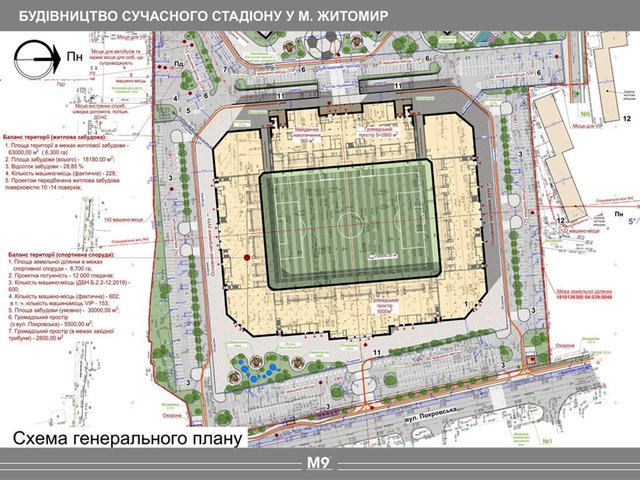

FC_polissya
Футбольний клуб «Полісся» Ставки — український аматорський футбольний клуб із села Ставки Радомишльського району Житомирської області, заснований у 1988 році.
Футбольний клуб «Полісся» Ставки — український аматорський футбольний клуб із села Ставки Радомишльського району Житомирської області, заснований у 1988 році.
Об'єкт планується звести в центрі міста, на зручному транспортному вузлі між великими населеними пунктами. Концепція стадіону розроблена на основі аналізу попередніх аналогічних споруд і включає три ключові напрями: комерційний, соціальний та дозвілля. Основні елементи стадіону: спортивне ядро, трибуни на 12300 місць, VIP-зони, приміщення для друку, укриття, комерційні блоки з адміністрацією, магазинами, фан-шопом, музеєм, а також кіберспортивною ареною, яку можна трансформувати відповідно до потреб. Архітектурна форма споруди базується на чітких прямих лініях, що відображають ідентичність регіонального футбольного клубу, зазначено у проєкт.
22.02.2025 | Кривий Ріг | "Гірник" | Інгулець - Полісся